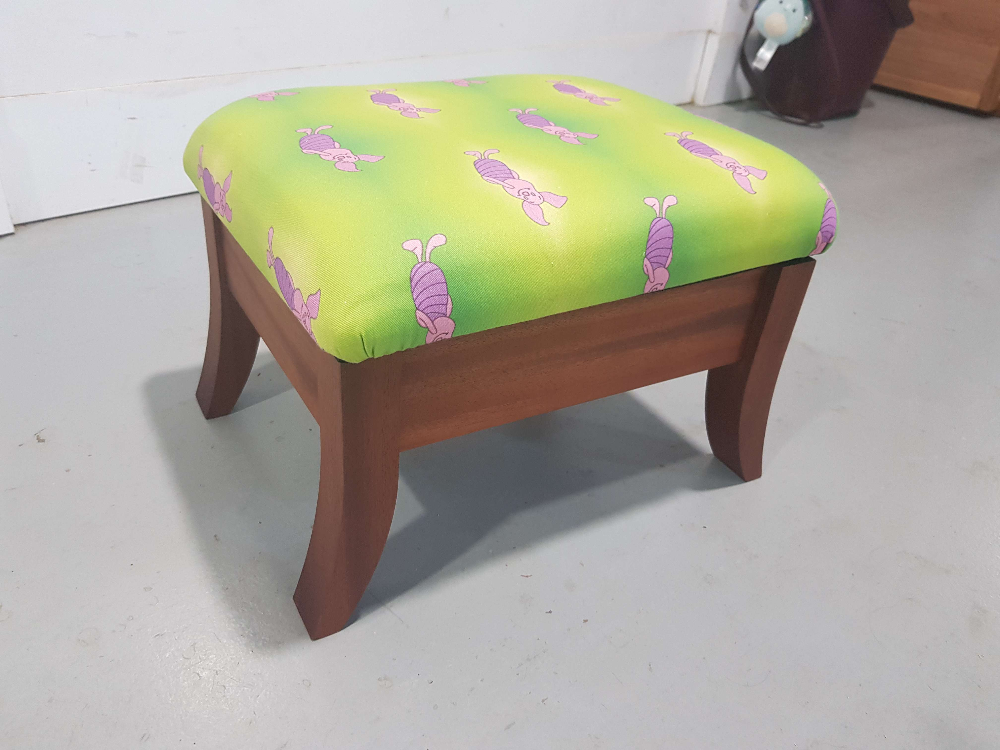
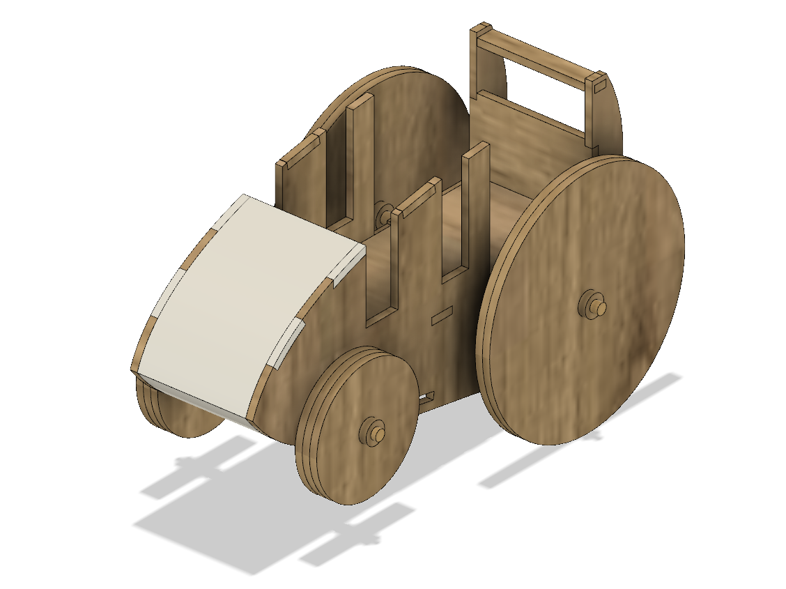
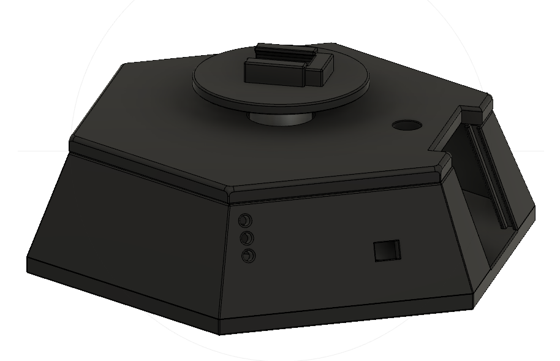
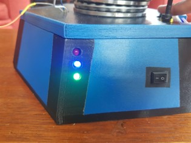

Jordan Bean
Skills
Food preparation, kitchen hand and cleaning, activity preparation, supervision, practical teacher level first aid, workshop management and maintenance, coding in multiple languages including Java and python, kitchen management and maintenance, proficiency in kitchen and workshop equipment and machines.
   